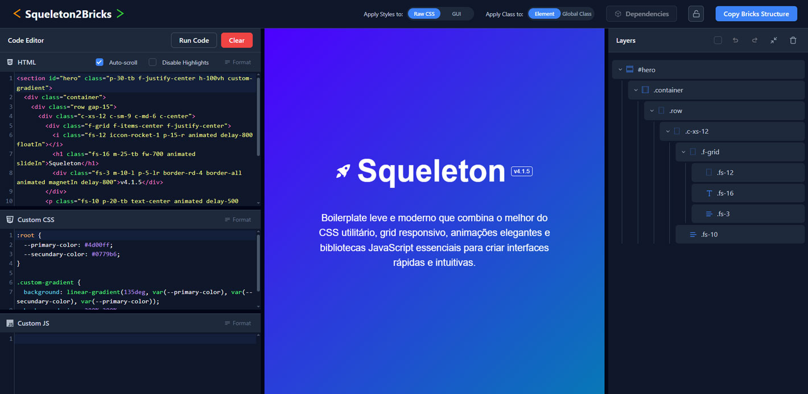

Instalação e Configuração
Via CDN
A forma mais rápida de começar - sem necessidade de build ou deploy:
Arquivos para Download
- squeleton.v4.css – Versão completa para desenvolvimento (~35KB gzip)
- squeleton.v4.min.css – Versão minificada para produção (~25KB gzip)
- squeleton-main.v4.min.js – JavaScript principal (~12KB gzip)
- squeleton-scripts.v4.min.js – JavaScript secundário (~18KB gzip)
Template - HTML Base
Breakpoints
Breakpoints e Responsividade
O Squeleton usa uma abordagem híbrida única: Grid mobile-first (colunas expandem de mobile para desktop) + Utilitários desktop-first (ajustes reduzem de desktop para mobile).
Isso combina praticidade no desenvolvimento (escreva para desktop, ajuste só o necessário para mobile) com layouts responsivos otimizados (grids naturalmente empilham em mobile e dividem em desktop).
| Breakpoint | Grid (min-width) | Utilitários (max-width) |
|---|---|---|
| Extra Small | c-xs- (base) |
xs- (≤639px) |
| Small | c-sm- (≥640px) |
sm- (≤991px) |
| Medium | c-md- (≥992px) |
md- (≤1199px) |
| Large | c-lg- (≥1200px) |
— (desktop é padrão) |
Lógica de uso com Grid Mobile-First
Lógica de uso com Utilitários Desktop-First
Grid System
Grid System Responsivo (12 Colunas)
Sistema de grade mobile-first desenvolvido com flexbox.
Comece com c-xs- como base e expanda progressivamente com c-sm-,
c-md-, c-lg-.
Estrutura Básica:
Demonstração Visual
Exemplos Responsivos:
Containers e Gaps
Sistema flexível de containers e controle de espaçamento entre colunas:
Gap Padrão (30px)
Gaps Customizados
Demonstração Visual
Exemplos de uso de Gap com Grid Responsivo
Container vs Container-fluid:
Classes Utilitárias
Abordagem Desktop-First
Classes utilitárias usam desktop-first: escreva para desktop (sem prefixo) e ajuste
para telas menores com md-, sm-, xs-.
Não existe lg- para utilitários porque desktop já é o padrão. Isso reduz
código e acelera o desenvolvimento.
Classes de Padding e Margin
Padrão intuitivo: o número na classe é o valor em pixels. Combine livremente com qualquer direção:
| Sufixo | Aplicação | Exemplo |
|---|---|---|
| -all | Todos os lados | p-20-all |
| -t | Superior (top) | m-15-t |
| -b | Inferior (bottom) | p-10-b |
| -l | Esquerda (left) | m-5-l |
| -r | Direita (right) | p-25-r |
| -lr | Horizontal (left + right) | m-20-lr |
| -tb | Vertical (top + bottom) | p-30-tb |
Intervalo de Valores
Reset de Espaçamento
Espaçamento com Breakpoints
Demonstração Visual
m-30-lr
m-10-tb
Classes de Largura e Altura
Larguras em Pixels
Larguras em Porcentagem
Alturas em Pixels
Alturas Especiais
Classes de Display
Controle total sobre a propriedade display dos elementos:
Demonstração Visual
Item 1 d-flex
Item 2
célula 1
célula 2
Display Flexbox
Sistema completo de classes flexbox para layouts avançados:
Ativação do Flex Container
Quebra de Linha (Wrap)
Alinhamento dos Itens (align-items)
Justificação do Conteúdo (justify-content)
Alinhamento Individual (align-self)
Crescimento e Encolhimento
Gap de Itens Flex
Patterns Mais Utilizados
Exemplos Práticos de Layouts
Demonstração Visual
Menor Item
Mais
Alto Item
Menor
1 Item
2 Item
3
f-auto-min Item
f-auto-max
Referência Rápida - Classes Essenciais
Border Radius
Classes para controle completo dos cantos arredondados:
Demonstração Visual
Exemplos Práticos
Opacity
Classes para controle preciso da transparência dos elementos:
Demonstração Visual
Casos de Uso Práticos
Font Size - Escala Numérica
Escala completa de tamanhos de fonte (fs-1 a fs-16). Classes fs-1 a fs-6 são fixas, fs-7 a fs-16 usam
clamp() para tipografia fluida. Todas disponíveis com prefixos responsivos, usando as mesmas escalas: md-fs-{1-16}, sm-fs-{1-16}, xs-fs-{1-16}
Tamanhos Fixos (fs-1 a fs-6)
Tamanhos Fluidos (fs-7 a fs-16)
Demonstração Visual
Tipografia
Classes completas para controle tipográfico avançado:
Font Weight & Letter Spacing
Alinhamento e Formatos
Tamanho Relativo
Line Height
Demonstração Visual
Exemplos Práticos
Alertas e Feedback
Classes de Alerta
Classes semânticas para feedback visual. Use em mensagens, badges, botões ou qualquer elemento que precise comunicar estado:
Tooltips (Balloon.css)
Tooltips em CSS puro para dicas contextuais. Adicione aria-label com o texto e
data-balloon-pos com a posição:
Atributos principais:
- aria-label: Define o texto que será exibido no tooltip
- data-balloon-pos: Define a posição do tooltip (up, down, left, right, up-left, up-right, down-left, down-right)
- data-balloon-length: Controla o tamanho do tooltip (fit, small, medium, large)
- data-balloon-blunt: Remove a animação do tooltip
- data-balloon-visible: Mantém o tooltip sempre visível
Ícones
Mais de 300 Ícones Vetoriais
Biblioteca completa de ícones criada com IcoMoon, otimizada para web:
Showcase de Ícones Populares:
Categorias Completas
- Navegação: arrows, chevrons, points
- Interface: home, user, settings, menu
- Comunicação: envelope, phone, comment, qrcode
- Mídia: play, pause, stop, volume
- Comércio: cart, money, credit, ticket
- Arquivo: file, folder, download, upload
- Social: facebook, twitter, instagram, linkedin
- Status: check, warning, error, info
Acesse a lista completa de ícones integrados e seus respectivos códigos.
Animações
Animações acionadas via classe wow ou animated
Para executar essas animações você pode combinar com a classe animated para exibição imediata ou a classe wow para controle de exibição no viewport ativo (saiba mais). Passe o mouse sobre o bloco para visualizar a animação em ação:
.fadeIn
.fadeInDown
.fadeInLeft
.fadeInRight
.fadeInUp
.fadeOut
.backInLeft
.backInRight
.backInDown
.backInUp
.bounceIn
.zoomIn
.zoomOut
.rotateIn
.flash
.pulse
.shakeX
.swing
.tada
.flipIn
.glowIn
.popIn
.liquidIn
.magnetIn
.floatIn
.waveIn
Animações contínuas
Conjunto de efeitos prontos que já possuem repetição e duração configuradas em uma única classe.
.anima-pulse
.anima-shake
.anima-heart
.anima-skeleton
Micro-bibliotecas JavaScript
Bibliotecas Vanilla Integradas
Todas as micro-bibliotecas estão pré-configuradas e otimizadas para funcionar perfeitamente com o Squeleton.
- HTMX - Biblioteca que oferece acesso a AJAX, CSS Transitions, WebSockets e Server Sent Events diretamente no HTML usando atributos, permitindo interfaces modernas com a simplicidade do hypertext.
- Embla Carousel - Biblioteca de carrossel minimalista com movimento fluido e precisão de swipe excepcional.
- js-cookie - Biblioteca JavaScript simples e leve para gerenciamento de cookies do navegador.
- a11y-dialog - Biblioteca leve e flexível para criação de janelas de diálogo intuitivas. (scroll lock auto-inicializado)
- VanJS - O menor framework de interface de usuário reativo do mundo. Incrivelmente poderoso, absurdamente pequeno.
- toastify-js - Biblioteca JavaScript para mensagens de notificação aprimoradas.
- Wow2 Animation - Fork otimizado próprio baseado no wow.js para animações on-scroll performáticas. (auto-inicializado)
- VenoBox 2 - Biblioteca JavaScript Lightbox para imagens, vídeos, galerias e iFrames. (auto-inicializado)
- Counter-Up2 - Biblioteca leve que conta até um número alvo quando o número se torna visível.
Consulte a documentação específica de cada uma para casos de uso avançados.
HTMX - Exemplo Click to Load
O uso de AJAX com hipermídia permite atualizar partes específicas de uma página de forma assíncrona, carregando novos conteúdos ou dados sem recarregar toda a página. Essa abordagem melhora a experiência do usuário, tornando a navegação mais rápida e fluida, além de possibilitar interfaces mais interativas e dinâmicas.
Esse exemplo mostra a implementação do recurso “clique para carregar mais” para artigos, onde a última linha traz um botão que substitui toda a linha pela próxima página de resultados, que também terá um botão para continuar o carregamento.
Introdução ao Squeleton v4
Conheça as principais novidades...
Sistemas de Grid Responsivos
Como utilizar o sistema de grid...
Marcação HTML
Principais atributos HTMX:
- hx-get: Define a URL para buscar conteúdo via GET
- hx-post: Define a URL para enviar dados via POST
- hx-target: Especifica o elemento que receberá o conteúdo
- hx-swap: Define como o conteúdo será inserido (innerHTML, outerHTML, beforeend, afterbegin)
- hx-trigger: Evento que dispara a requisição (click, mouseenter, load, etc)
- hx-indicator: Elemento que será exibido durante o carregamento
Acesse a documentação completa de atributos e funções do HTMX.
Embla Carousel - Exemplo com Breakpoints
Carrosséis são elementos de interface que permitem exibir múltiplos conteúdos em um espaço reduzido, organizados em formato de slides navegáveis. Eles são úteis para destacar produtos, imagens, notícias ou destaques de forma dinâmica e interativa, chamando a atenção do usuário e otimizando o uso do espaço na página.
Marcação HTML
Acesse a documentação completa de atributos e funções do Embla Carousel.
a11y-dialog - Modal Exemplo
Modais são elementos de interface usados para exibir informações ou interações importantes sobrepostas ao conteúdo principal, capturando a atenção do usuário. Eles são úteis para confirmar ações, exibir formulários, mostrar mensagens de alerta ou fornecer detalhes sem redirecionar a página, garantindo foco e evitando que o usuário perca o contexto da navegação.
Clique para abrir um ModalAtributos principais:
- data-modal="id": Identifica o modal a ser manipulado
- data-modal-show="id": Ativa o modal quando aplicado a um elemento clicável
- data-modal-hide: Fecha o modal quando aplicado a elementos dentro do modal
- aria-modal="true": Indica que o elemento funciona como modal para leitores de tela
- aria-hidden="true": Estado inicial do modal (oculto)
- tabindex="-1": Garante que o modal possa receber foco
Classes principais:
- modal-dialog: Contêiner principal do modal
- dialog-content: Wrapper para conteúdo e backdrop
- dialog-backdrop: Overlay escuro atrás do modal
- dialog-inline: Container para o conteúdo visível
- dialog-close: Botão de fechar (estilizado no tema)
- modal-popup: Estilo padrão para o conteúdo do modal
Acesse a documentação completa de atributos e funções do a11y-dialog.
Importante: Todos os atributos originais data-a11y-dialog foram renomeados para data-modal na integração com Squeleton.
VanJS - Exemplos Reativos
Com apenas 1,0 kB, este framework entrega os recursos fundamentais para desenvolvimento web reativo: templates DOM, estado, vinculação de estado, derivação de estado, efeitos, SPA, roteamento client-side e hidratação.
Contador de Likes (Sem Persistência)
Contador de Likes (Com Persistência)
Experimente recarregar a página após alterar os valores.
Contador de Likes e Deslikes (Grupo com Persistência)
Experimente recarregar a página após alterar os valores.
Principais funções do VanJS:
- van.tags: Cria elementos HTML de forma programática usando sintaxe JavaScript (hyperscript).
- van.add: Adiciona componentes VanJS ao DOM. Monta elementos criados com van.tags em um container específico.
- van.state: Cria um estado reativo que atualiza automaticamente o DOM quando seu valor muda.
- van.derive: Executa efeitos colaterais automaticamente quando estados observados mudam.
Funções extendidas do Squeleton com VanJS:
- persistentItem: Cria um van.state que persiste automaticamente no localStorage ou sessionStorage. O estado sobrevive a recarregamentos de página e inclui método .clear() para resetar.
- persistentGroup: Gerencia múltiplos persistentItem relacionados com prefixo comum. Retorna objeto com estados individuais e método .clearAll() para limpar todos de uma vez.
Acesse a documentação oficial de atributos e funções do VanJS.
Consulte também o manual das funções extendidas de persistência exclusivos do Squeleton.
Toastify JS - Exemplo de Notificações
Toasts são mensagens temporárias exibidas na tela para informar o usuário sobre ações ou eventos recentes, como confirmações, alertas ou erros. Eles aparecem de forma discreta no canto da tela, e desaparecem automaticamente após alguns segundos, garantindo comunicação rápida sem interromper a navegação.
Marcações HTML
JS de configuração
Principais opções do Toastify JS:
- text: Texto a ser exibido no toast
- duration: Duração em milissegundos (3000 = 3 segundos)
- destination: URL para redirecionar ao clicar no toast
- newWindow: Abrir link em nova janela (true/false)
- close: Mostrar botão para fechar (true/false)
- gravity: Posição vertical ("top" ou "bottom")
- position: Posição horizontal ("left", "center" ou "right")
- stopOnFocus: Parar a contagem ao passar o mouse (true/false)
- onClick: Função de callback ao clicar no toast
- style: Objeto com estilos CSS personalizados
Acesse a documentação completa de atributos e funções do toastify-js.
WOW2 & Animated - Exemplos
Animações adicionam movimento e transições visuais aos elementos da página, tornando a interface mais atraente e intuitiva. Elas ajudam a guiar a atenção do usuário, reforçar interações e transmitir feedback visual de forma dinâmica, sem a necessidade de escrever código CSS complexo do zero.
Nota: O Squeleton utiliza uma versão exclusiva e atualizada do wow.js. Esta implementação proprietária inclui otimizações de performance e é automaticamente desativada em dispositivos móveis para garantir uma experiência de rolagem mais fluida. Esta versão não está disponível separadamente como um script independente.
Atributos de configuração WOW2:
- data-wow-delay: Tempo de espera antes da animação iniciar (exemplo: "0.2s")
- data-wow-duration: Duração da animação (exemplo: "2s")
- data-wow-iteration: Número de vezes que a animação se repete (exemplo: "10")
- data-wow-offset: Distância em pixels do elemento até o fundo da janela para iniciar a animação (exemplo: "200")
Classe Animated (sem dependência de viewport)
Usar a classe animated no lugar da wow ativa animações imediatamente ao carregar a página, independentemente da posição do elemento na tela, diferente da classe "wow" que só anima elementos quando entram na área visível (viewport) durante a rolagem. Com "animated", seus elementos são animados instantaneamente mesmo se estiverem fora da área visível inicial.
Classes de Delay Disponíveis
- .delay-100: Delay de 0.1 segundos
- .delay-200: Delay de 0.2 segundos
- .delay-250: Delay de 0.25 segundos
- .delay-300: Delay de 0.3 segundos
- .delay-400: Delay de 0.4 segundos
- .delay-500: Delay de 0.5 segundos
- .delay-600: Delay de 0.6 segundos
- .delay-700: Delay de 0.7 segundos
- .delay-800: Delay de 0.8 segundos
- .delay-900: Delay de 0.9 segundos
- .delay-1000: Delay de 1 segundo
- .delay-1250: Delay de 1.25 segundos
- .delay-1500: Delay de 1.5 segundos
- .delay-1750: Delay de 1.75 segundos
- .delay-2000: Delay de 2 segundos
- .delay-3000: Delay de 3 segundos
- .delay-4000: Delay de 4 segundos
- .delay-5000: Delay de 5 segundos
Classes de Duração Disponíveis
Controle a velocidade das animações com essas classes de duração:
- .duration-500: Animação rápida (0.5 segundos)
- .duration-1000: Animação média (1 segundo)
- .duration-1250: Animação média-lenta (1.25 segundos)
- .duration-1500: Animação lenta (1.5 segundos)
- .duration-2000: Animação muito lenta (2 segundos)
- .duration-2500: Animação muito lenta (2.5 segundos)
- .duration-3000: Animação extra lenta (3 segundos)
Classes de Repetição
Controle quantas vezes a animação se repete:
- .repeat-2: Executa 2 vezes
- .repeat-3: Executa 3 vezes
- .repeat-4: Executa 4 vezes
- .repeat-5: Executa 5 vezes
- .infinite: Repete infinitamente
Classes de Direção
Altere a direção de execução das animações:
- .reverse: Executa a animação de trás para frente
- .alternate: Alterna entre normal e reverso a cada repetição
- .alternate-reverse: Como alternate, mas começa pelo reverso
Classes de Controle de Reprodução
Controle o estado de reprodução via JavaScript:
- .paused: Pausa a animação
- .running: Resume/inicia a animação
Exemplos Combinados
VenoBox 2 - Exemplos de Lightbox
Como complemento aos modais, o VenoBox 2 oferece suporte nativo a galerias de imagens, vídeos e iframes, permitindo navegação entre itens e proporcionando uma visualização imersiva.
{kind=link}
Atributos principais VenoBox:
- data-vbtype: Tipo de conteúdo ("video", "iframe", "inline", "ajax")
- data-gall: Nome da galeria para agrupar itens relacionados
- data-autoplay: Reprodução automática para vídeos (true/false)
- data-maxwidth: Largura máxima do lightbox
- data-title: Título a ser exibido no lightbox
- href: URL do conteúdo (vídeo, imagem, página)
Classes automáticas no Squeleton:
- open-video: Ativa VenoBox para vídeos (compatível com links do YouTube e Bunny Stream)
- open-gallery: Ativa VenoBox para imagens únicas ou galeria de imagens
- open-iframe: Ativa VenoBox para abertura de links em modal com iframe
Acesse a documentação completa de atributos e funções do VenoBox 2.
Counter-Up2 - Exemplo de Contagem
O efeito de contagem animada exibe números aumentando gradualmente até um valor final, criando uma sensação de progresso e destaque para estatísticas, metas ou resultados de forma visualmente atraente.
Você pode acionar o gatilho para definir quando iniciar a contagem, aqui está uma maneira comum de fazer isso:
Marcação HTML
JS de configuração
O que podemos contar?
- Flutuadores: 1.234
- Inteiros: 1234
- Com vírgulas: 1,234.56
- Vírgulas e pontos: 12.345,67
- Com caracteres não numéricos: $1,234.56
- Vários valores contáveis: 168 horas de 10.080 minutos com 604.800 segundos
Acesse a documentação completa de atributos e funções do Counter Up2.
Conversor Bricks Builder
Conversor de código Squeleton para JSON de Bricks Builder
Transforme seu código nativo Squeleton em uma estrutura JSON 100% compatível com o Bricks Builder, pronta para ser colada e editada diretamente no melhor editor de páginas do WordPress!
🤖 Combinação perfeita com Squeleton Skill: Gere páginas completas usando a habilidade squeleton-skill via IA e converta instantaneamente para Bricks Builder, acelere sua produção aproveitando todo o código gerado.
⚡ Principais Recursos
- Conversão instantânea – Cole código do Squeleton e obtenha a estrutura Bricks imediatamente
- Painel de camadas visual – Reordene, renomeie e duplique elementos com arrastar e soltar
- Sincronização tripla – Clique nos elementos na pré-visualização para destacá-los nas camadas e no código
- Edição de CSS – Clique com o botão direito em qualquer camada para visualizar e editar suas regras CSS específicas
- Nomeação inteligente – Camadas nomeadas automaticamente com base em classes e IDs
Perguntas Frequentes
Dúvidas sobre o Squeleton
Por que o Squeleton foi criado e qual seu objetivo?
O Squeleton nasceu da necessidade de simplificar o desenvolvimento web, evitando problemas comuns dos frameworks modernos: atualizações que quebram compatibilidade, necessidade de build constante, abandono de versões legadas e complexidade desnecessária. Focado em sites institucionais, landing pages e portais, prioriza manutenção simplificada, estabilidade de código e performance, usando apenas CSS e JavaScript Vanilla.
O boilerplate prioriza:
- Manutenção simplificada e sustentável a longo prazo
- Evolução orgânica baseada nas necessidades reais dos projetos
- Estabilidade de marcação de código, evitando reescritas frequentes
- Base compartilhada que permite que projetos evoluam juntos
A filosofia do Squeleton é a pureza em todas as etapas do desenvolvimento, utilizando exclusivamente CSS e JavaScript Vanilla. Ele se posiciona como o vetor mínimo necessário para criar uma estrutura funcional através de:
- Grids responsivos otimizados
- Interações modernas via atributos HTML padronizados
- Componentes essenciais (modais, carrosséis, animações, ícones, notificações)
- Sistema de animações leve e performático
- Hidratação AJAX simplificada via HTMX
- Classes utilitárias que aceleram o desenvolvimento
Este approach minimalista permite que desenvolvedores envolvidos construam sites modernos e funcionais sem a sobrecarga típica dos frameworks complexos, resultando em projetos mais leves, rápidos e sustentáveis a longo prazo.
Como o Squeleton se compara com outros Frameworks CSS?
O Squeleton foi projetado como um boilerplate — uma base estrutural leve e pronta para uso — diferente dos frameworks CSS tradicionais que impõem padrões visuais. Ele não define cores, fontes ou componentes estilizados, fornecendo apenas a estrutura essencial e integrando bibliotecas JavaScript curadas de terceiros sem necessidade de build.
Ainda assim, devido à sua composição de grids, breakpoints e classes utilitárias únicas, o Squeleton também pode ser comparado tecnicamente com frameworks como Bootstrap, Tailwind, Bulma e Pico. Consulte o estudo comparativo que analisa tamanhos, funcionalidades e abordagens responsivas.
Como personalizar as cores e fontes?
O Squeleton é deliberadamente agnóstico em relação a paleta de cores, família de fontes e estilos muito específicos. Esta neutralidade é uma decisão estratégica para maximizar sua portabilidade entre diferentes temas e projetos.
Para implementar personalizações de maneira organizada e sustentável, recomendamos:
- Criar uma folha de estilos separada dedicada exclusivamente às variáveis CSS de personalização
- Definir suas variáveis no seletor
:rootpara estabelecer sua paleta de cores e família de fontes compatíveis com seu projeto - Manter um arquivo JavaScript separado para funções específicas do projeto, como listeners personalizados, manipulação de cookies e funcionalidades customizadas
Esta abordagem de separação traz benefícios importantes de manutenção:
- Atualizações futuras do boilerplate não afetarão seus estilos e funcionalidades personalizadas
- Classes, marcações e atributos permanecerão compatíveis mesmo após atualizações
- Separação clara entre a estrutura base e as personalizações específicas do projeto
Exemplo de personalização de variáveis e aplicação:
Como implementar animações personalizadas?
Por que não há um sistema de build/compilação?
Esta escolha deliberada alinha-se com o princípio minimalista do Squeleton e é melhor explicada com um paralelo ao ensaio "Why htmx Does Not Have a Build Step": "A modularização é uma das grandes ideias do software. Módulos possibilitam a resolução de problemas incrivelmente complexos, decompondo o código em subestruturas bem contidas que resolvem problemas menores. Às vezes, porém, você deseja resolver problemas simples, ou pelo menos problemas relativamente simples. Nesses casos, pode ser útil não usar os blocos de construção de softwares mais complexos, para não emular sua complexidade sem criar valor correspondente."
Considerações práticas que fundamentam esta abordagem:
- Todas as dezenas de funcionalidades e centenas de classes utilitárias inclusas no Squeleton somadas não ultrapassam ~55KB em formato gzip (padrão de transferência dos CDN's)
- A maior parte deste tamanho corresponde aos estilos CSS, que navegadores modernos processam com eficiência
- Este tamanho total é frequentemente menor que uma única imagem JPG em um site
- Comparativamente, muitas bibliotecas SPA são maiores, e mesmo com sistemas de build complexos, acabam utilizando spinners para mascarar a alta carga de processamento e consumo de memória no lado do cliente/navegador
Benefícios dos arquivos unificados compactos:
- Facilitam a manutenção de longo prazo, simplificando atualizações e correções
- Otimizam a navegação em páginas MPA (Multi-Page Application) através do uso distribuído de cache entre navegador e CDN
- Eliminam a necessidade de ferramentas adicionais e processos de build que frequentemente introduzem novas complexidades e pontos de falha
- Reduzem a curva de aprendizado para novos desenvolvedores envolvidos no projeto
- Garantem consistência visual e funcional entre diferentes páginas do projeto
Como descobrir todas as classes utilitárias e possibilidades de uso?
Esta documentação aborda as classes e componentes mais utilizados do Squeleton, mas o boilerplate oferece muito mais possibilidades que podem impulsionar seu desenvolvimento.
O Squeleton contém mais de 400 classes utilitárias, dezenas de componentes e diversas integrações que são impossíveis de serem documentadas exaustivamente em um único guia. Para explorar todo o potencial do boilerplate, recomendamos:
- Examinar o código-fonte não minificado: Abra o arquivo CSS não minificado (squeleton.v4.css) para descobrir padrões de nomenclatura, variações de classes e possibilidades não documentadas
- Explorar as documentações originais: As bibliotecas integradas (HTMX, a11y-dialog, Embla Carousel, etc.) possuem documentações completas que podem revelar recursos avançados adaptados ao Squeleton
- Experimentar combinações: Muitas das classes utilitárias foram projetadas para funcionar em conjunto, criando efeitos e comportamentos únicos quando combinadas
O Squeleton foi projetado para ser intuitivo, então mesmo classes não documentadas geralmente seguem padrões de nomenclatura consistentes que facilitam sua descoberta e compreensão. A exploração direta do código-fonte é uma parte importante do processo de aprendizado e permite que você aproveite todo o potencial do boilerplate.
Posso usar o Squeleton com Claude e outras IAs?
Sim! Foi desenvolvida uma Skill específica para desenvolvimento com IA chamada squeleton-skill.
Skills (ou "habilidades") são pacotes de conhecimento especializados que você pode adicionar a assistentes de IA como Claude Code, GitHub Copilot ou outros agentes de código. Funcionam como "plugins de conhecimento" que ensinam a IA sobre frameworks, bibliotecas ou padrões específicos do seu projeto.
Ao instalar esta skill, a IA ganha:
- Conhecimento completo das 400+ classes utilitárias do Squeleton
- Referências detalhadas de grid, espaçamento, flexbox, animações e ícones
- Padrões de uso e boas práticas específicas do framework
- Integração com bibliotecas JS (HTMX, VanJS, Embla, VenoBox, etc.)
- Exemplos práticos para hero sections, cards, modais, carrosséis e mais
Como usar?
- Baixe a skill: squeleton-skill.zip
- Instale no seu IDE (Claude for VSCode, Cursor, Windsurf, etc.) seguindo a documentação da ferramenta
- Desenvolva com IA: A IA agora conhece todo o Squeleton e priorizará suas classes e componentes ao invés de criar CSS e JS personalizado
Para mais detalhes sobre Skills, consulte a documentação do Claude Agent SDK ou do seu assistente de IA preferido.
Suporte e Comunidade
Como reportar bugs ou sugerir melhorias?
O Squeleton é gratuito para uso comercial?
Como contribuir com o desenvolvimento?
- Reportando bugs e sugerindo melhorias
- Corrigindo problemas existentes através de pull requests
- Melhorando a documentação
- Compartilhando exemplos e casos de uso